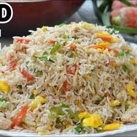

CHECKEN FRIED RICE

Ingredients
- Vegetable oil: 100ml
- Eggs: 2
- Garlic finely chopped: 25gms
- Onion, diced: 200gms
- Carrot, diced: 200gms
- Leeks: 200gms
- Cooked basmati rice: 3.5kg
- Chicken breast: 250 gms
Instructions
- Step 1
- Heat the oil in a thick bottom pan or Wok and add beaten eggs and fry.
- Step 2
- Add garlic and ginger paste and sauté for a few seconds.
- Step 3
- Add onions, carrot, leeks and sauté for a few seconds.
- Step 4
- Stir in the rice with Knorr Chicken Seasoning Powder to taste, fried chicken cubes, green spring onions and wok fry for another few seconds.
- Step 5
- Garnish with diced green spring onions.
Contact us for more details